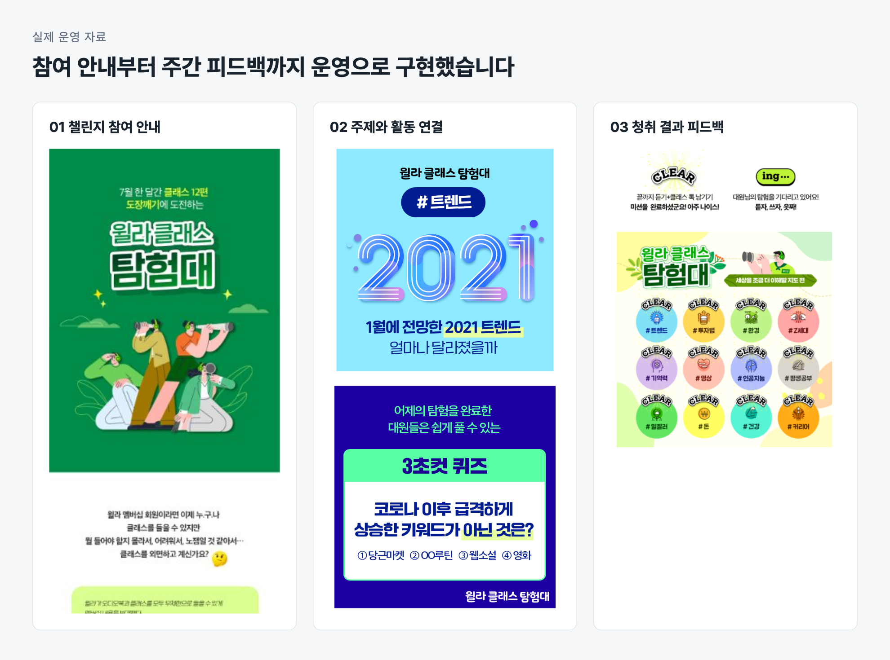
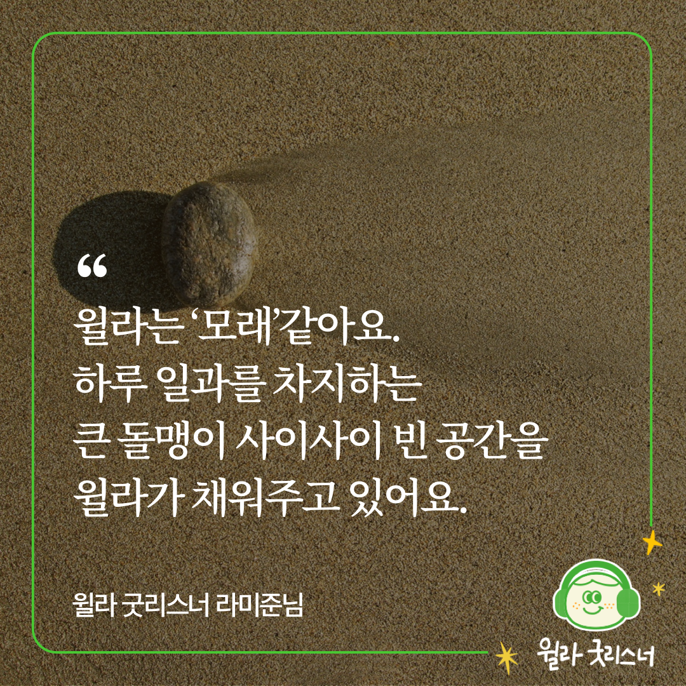
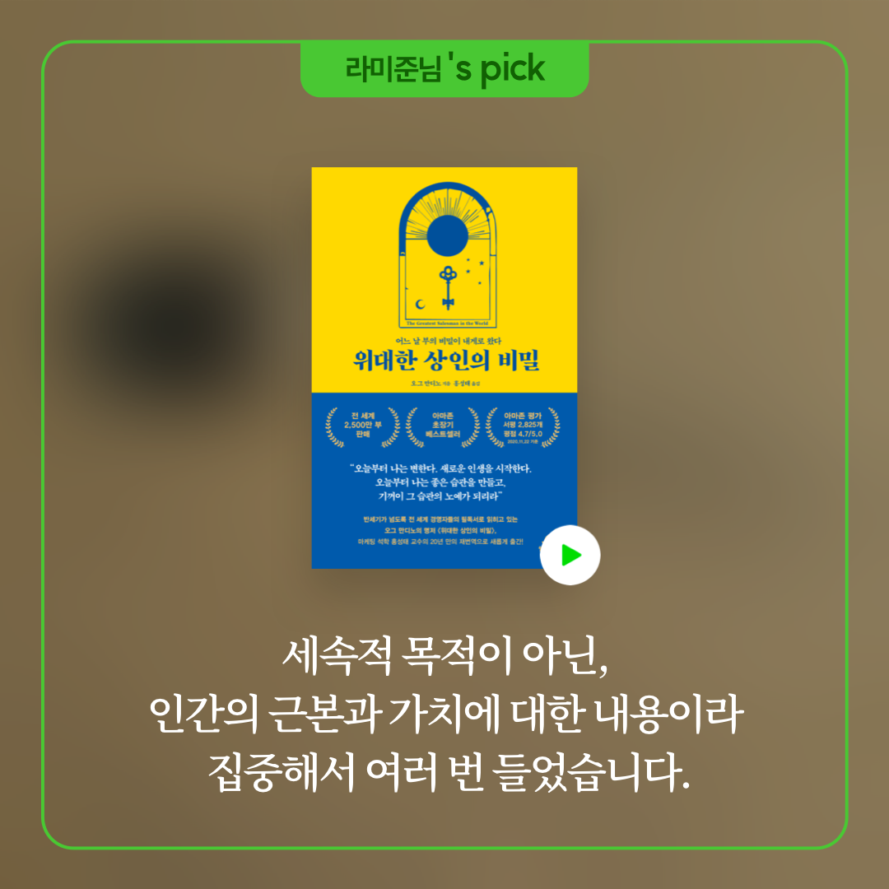

구독을 이어가는 고객은 무엇이 다를까?
구독형 서비스인 윌라에서는 고객이 서비스를 꾸준히 이용하며 구독을 이어가도록 해야 했습니다. 하지만 고객의 어떤 행동을 바꿔야 구독이 이어질지 명확하지 않았습니다. 기능을 정하기에 앞서, 구독을 유지하는 고객의 이용 방식부터 이해해야 했습니다.
우리는 먼저 고객 행동을 분류하고 일관된 기준으로 기록하기 위한 택소노미를 설계했습니다. 이를 바탕으로 첫 달 무료 이용에서 유료로 전환하는 고객과 이후에도 구독을 유지하는 고객의 행동을 나눠 분석했습니다. 저는 팀 리드와 방향을 맞추며 분석에서 얻은 가설을 사용자 조사와 운영 실험으로 구체화했습니다.
첫 결제와 지속 구독에서는 서로 다른 행동이 보였습니다
첫 달 무료 이용에서 유료로 전환하는 고객에게서는 대작과 같은 시그니처 오디오북을 끝까지 듣는 경험이 눈에 띄었습니다. 반면 구독을 계속 유지하는 고객은 앱을 자주 실행하고 다양한 콘텐츠를 함께 듣는 패턴을 보였습니다. 첫 결제까지의 경험과 이후에도 계속 이용할 이유를 나눠 볼 필요가 있었습니다.
구독을 이어가지 않는 고객은 소설이나 자기계발서처럼 특정 카테고리에 이용이 집중된 경우가 많았습니다. 구독을 유지하는 고객은 오디오북뿐 아니라 클래스 이용도 높았습니다. 하나의 인기 작품을 다 듣는 것에서 나아가, 다른 주제와 형식으로 관심을 넓히는 경험에 주목했습니다.
마침 멤버십이 개편돼 오디오북과 클래스를 모두 이용할 수 있게 됐습니다. 클래스는 오디오북보다 형태와 주제가 다양하고 제작 기간도 짧아 시의성 있는 내용을 제공하기 좋았습니다. 익숙한 카테고리 밖에서도 들을 이유를 계속 만들 수 있는 콘텐츠였습니다.
여기서 가설을 세웠습니다. 고객이 앱을 더 자주 열고, 여러 카테고리의 콘텐츠를 이어 듣게 하면 구독을 지속할 이유도 늘릴 수 있을 것이라고 봤습니다. 실험에서 먼저 확인할 행동은 앱 실행 빈도와 청취량, 다양한 콘텐츠로의 청취 확장이었습니다.
함께 이용할 수 있는데, 클래스는 왜 듣지 않을까?
다양한 콘텐츠를 듣게 하려면 아직 클래스를 이용하지 않는 이유부터 알아야 했습니다. 클래스 미경험자를 조사하니 존재 자체를 모르는 경우와, 들어보려 해도 무엇부터 선택할지 모르는 경우가 있었습니다.
콘텐츠를 더 제공하는 것만으로는 이 장벽을 넘기 어려웠습니다. 처음 들을 만한 콘텐츠를 골라 추천 이유를 설명하고 한 편을 들은 뒤 다음 선택까지 도와야 했습니다. 지식 콘텐츠를 꾸준히 듣는 데에는 자신의 성취를 확인하는 경험도 동기가 될 수 있다고 봤습니다.
기능 개발 없이, 행동이 달라지는지 봤습니다
이를 시험하기 위해 별도 기능 개발 없이 추천과 청취 미션, 성취 피드백을 운영으로 제공하는 4주 챌린지를 설계했습니다. 클래스 미경험자 중 참여를 희망하는 회원을 모집하고 첫 주제를 ‘세상을 이해할 지도’로 정했습니다. 변화하는 세상을 이해하는 데 필요한 클래스를 매일 하나씩 골라 추천 이유와 함께 전달했습니다.
전달 수단은 카카오 친구톡이었습니다. 앱을 열지 않는 일상에서도 접할 수 있고, 이미지와 충분한 설명으로 들을 이유를 전할 수 있기 때문입니다. 콘텐츠 선정과 추천 문구 작성은 직접 맡았습니다.
다음 날에는 전날 콘텐츠를 다시 알리면서 비슷한 주제나 다른 관점의 콘텐츠를 이어 추천했습니다. 클래스와 오디오북을 넘나들며 미션에 포함된 콘텐츠를 듣는 데서 끝나지 않고, 자신의 관심에 따라 다음 콘텐츠를 고를 수 있도록 했습니다.
참여자의 행동은 Amplitude로 분석했습니다. 미션 달성 기준은 해당 콘텐츠 전체 분량의 80% 이상 청취로 정하고 매주 일요일 한 주의 참여 결과를 ‘가정방문’이라는 이름의 성적표로 전달했습니다. 앱 안에 별도 기능을 구현하지 않고도 참여자가 자신이 수행한 미션과 성취를 확인할 수 있도록 했습니다.
| 풀어야 할 문제 | 설계한 개입 |
|---|---|
| 클래스를 모르거나 첫 콘텐츠 선택이 어려움 | 하루 한 편과 추천 이유를 전달 |
| 청취를 이어갈 동기가 필요함 | 주간 목표와 청취 결과를 확인하는 성적표 |
| 추천받은 한 편에서 이용이 끝남 | 연관 주제와 다른 관점의 콘텐츠로 다음 선택 연결 |

더 자주 앱을 열고, 추천받지 않은 콘텐츠까지 들었습니다
챌린지 기간에는 추천 콘텐츠에서 연관 콘텐츠로, 다시 스스로 선택한 콘텐츠로 청취가 확장됐습니다. 같은 기간 유사한 이용 행동을 보인 비참여 회원과 비교했을 때 참여자의 일평균 앱 실행 수는 2.8배, 클래스 재생 시간은 6배였습니다.
구독을 유지하는 고객에게서 발견했던 앱을 자주 실행하고 다양한 콘텐츠를 듣는 패턴이 챌린지 참여자에게서도 나타났습니다. 종료 후에도 참여자의 월평균 이용 클래스 편수는 전체 회원 대비 3배로 관찰돼, 청취가 미션 수행에만 머물지 않았음을 확인했습니다.
참여자 의견에서도 이 변화를 이해할 수 있었습니다. 추천 이유가 있어 무엇을 들을지 고민하는 부담이 줄었고, 평소 고르지 않던 콘텐츠를 경험했으며, 목표를 달성하고 싶어졌다는 반응이 있었습니다.
챌린지에서 시험한 방식을 서비스 운영에 적용했습니다
이 결과는 콘텐츠를 확보하는 것에 더해, 고객이 무엇을 들을지 선택하고 청취를 이어가도록 돕는 경험을 개선 대상으로 삼을 근거였습니다. 이를 바탕으로 첫 청취를 돕는 안내와 콘텐츠 소개 개선, 청취 목표 관리와 달성 인정, 이용 경험 공유를 위한 과제를 도출했습니다.
이 가운데 저는 첫 청취를 돕는 안내와 콘텐츠 소개 개선을 맡았습니다. 챌린지에서 사용한 콘텐츠 추천과 다음 청취 안내 방식을 적용해 고객 상태에 따른 CRM 캠페인을 기획했습니다. 마케팅과 협업해 Braze로 캠페인을 운영하고 운영 효율을 분석하며 개선했습니다. 추천 지면 개편에도 참여해 주제별 콘텐츠를 묶어 소개하는 큐레이션을 기획하고 운영했습니다.
앱 밖에서도, 다시 듣고 싶어질 계기를 만들었습니다
앱 안의 추천 지면과 메시지에 더해, 인스타그램과 블로그에서도 콘텐츠와 청취 이유를 소개했습니다. 신작과 주제별 추천, 일상에서 윌라를 이용하는 장면을 통해 기존 회원과 이탈 회원, 잠재 회원이 듣고 싶은 콘텐츠를 발견하도록 했습니다.
자신의 SNS에 이용 경험을 공유한 회원은 ‘굿리스너’로 선정하고 좋아하는 콘텐츠를 추천할 기회를 제공했습니다. 서비스가 직접 고른 콘텐츠뿐 아니라 회원의 취향과 실제 이용 경험도 다른 사람의 청취를 이끄는 추천으로 활용했습니다.


청취 행동의 변화에서 구독 유지까지 확인하려면
첫 유료 전환과 지속 구독에서 나타나는 이용 패턴을 나눠 보고 고객 조사로 첫 청취의 장벽을 구체화했습니다. 추천과 미션, 성취 피드백을 운영으로 제공하면서 기능을 개발하기 전에 목표로 삼은 행동이 참여자에게서 나타나는지 확인할 수 있었습니다.
다만 이 행동 변화가 구독 갱신으로 이어지는지까지는 확인하지 못했습니다. 다시 한다면 실험을 시작할 때부터 청취 행동과 구독 갱신을 함께 볼 수 있도록 관찰 기간과 비교 기준을 정하겠습니다. 참여 전 이용 수준과 갱신 시점이 비슷한 참여자와 비참여자를 비교하고 챌린지가 끝난 뒤에도 이용과 갱신을 추적해 운영을 확대할지 판단하겠습니다.